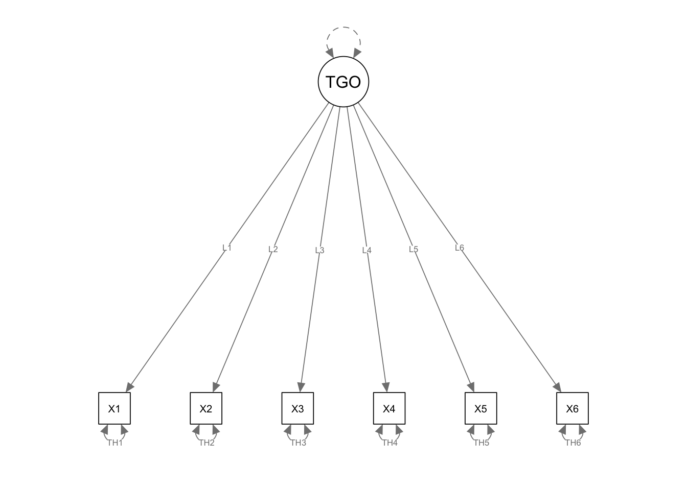

In this tutorial, we are going to use lavaan for scale
reliability assessment.
library(lavaan)
setwd(mypath)
dat <- read.table("Reliability_raw_data.csv", header = F, sep = ",")
colnames(dat) <- paste0("X", 1:6)
Note that we need to label the parameters and define new model parameters to compute the Omega coefficient.
\[\omega = \frac{(\sum_{i=1}^J\lambda_i)^2}{(\sum_{i=1}^J\lambda_i)^2 + \sum_{i=1}^J\theta_i}\]
con.model <- '
TGO =~ NA*X1 + L1*X1 + L2*X2 + L3*X3 + L4*X4 + L5*X5 + L6*X6
TGO ~~ 1*TGO
X1 ~~ TH1*X1
X2 ~~ TH2*X2
X3 ~~ TH3*X3
X4 ~~ TH4*X4
X5 ~~ TH5*X5
X6 ~~ TH6*X6
# model constraints
L1 > 0
L2 > 0
L3 > 0
L4 > 0
L5 > 0
L6 > 0
sumL := L1 + L2 + L3 + L4 + L5 + L6
sumTH := TH1 + TH2 + TH3 + TH4 + TH5 + TH6
omega := (sumL^2)/(sumL^2 + sumTH)
'You could request the bootstrapped standard errors and ask lavaan to output the bootstrapped confidence intervals.
con.fit <- sem(con.model, dat, se = "bootstrap", bootstrap = 5000)parameterEstimates(con.fit, ci = T)## lhs op rhs label est se z pvalue
## 1 TGO =~ X1 L1 1.601 0.094 16.971 0
## 2 TGO =~ X2 L2 0.845 0.061 13.881 0
## 3 TGO =~ X3 L3 0.791 0.060 13.164 0
## 4 TGO =~ X4 L4 0.390 0.072 5.425 0
## 5 TGO =~ X5 L5 1.699 0.122 13.921 0
## 6 TGO =~ X6 L6 1.222 0.128 9.568 0
## 7 TGO ~~ TGO 1.000 0.000 NA NA
## 8 X1 ~~ X1 TH1 1.500 0.223 6.725 0
## 9 X2 ~~ X2 TH2 0.729 0.067 10.943 0
## 10 X3 ~~ X3 TH3 0.661 0.071 9.253 0
## 11 X4 ~~ X4 TH4 1.238 0.106 11.724 0
## 12 X5 ~~ X5 TH5 2.339 0.239 9.793 0
## 13 X6 ~~ X6 TH6 3.781 0.341 11.075 0
## 20 sumL := L1+L2+L3+L4+L5+L6 sumL 6.547 0.331 19.791 0
## 21 sumTH := TH1+TH2+TH3+TH4+TH5+TH6 sumTH 10.248 0.452 22.660 0
## 22 omega := (sumL^2)/(sumL^2+sumTH) omega 0.807 0.018 44.592 0
## ci.lower ci.upper
## 1 1.408 1.786
## 2 0.713 0.959
## 3 0.675 0.913
## 4 0.245 0.524
## 5 1.466 1.934
## 6 0.967 1.470
## 7 1.000 1.000
## 8 1.053 1.950
## 9 0.601 0.857
## 10 0.524 0.802
## 11 1.037 1.450
## 12 1.858 2.797
## 13 3.132 4.466
## 20 5.884 7.184
## 21 9.292 11.039
## 22 0.769 0.841An alternative way to get a point estimate for model-based Omega
coefficient is to use the psych R pacakge:
library(psych)
coef.omg <- psych::omega(dat, nfactors = 1, lavaan = T)
coef.omg$omega.tot## [1] 0.8077233In this example, we will define a new parameter according to the coefficient H formula:
\[H = \frac{\sum_{i=1}^J\frac{\lambda_i^2}{\theta_i}}{1+\sum_{i=1}^J\frac{\lambda_i^2}{\theta_i}}\]
con.model_H <- '
TGO =~ NA*X1 + L1*X1 + L2*X2 + L3*X3 + L4*X4 + L5*X5 + L6*X6
TGO ~~ 1*TGO
X1 ~~ TH1*X1
X2 ~~ TH2*X2
X3 ~~ TH3*X3
X4 ~~ TH4*X4
X5 ~~ TH5*X5
X6 ~~ TH6*X6
# model constraints
L1 > 0
L2 > 0
L3 > 0
L4 > 0
L5 > 0
L6 > 0
R1 := (L1^2)/TH1
R2 := (L2^2)/TH2
R3 := (L3^2)/TH3
R4 := (L4^2)/TH4
R5 := (L5^2)/TH5
R6 := (L6^2)/TH6
sumR := R1 + R2 + R3 + R4 + R5 + R6
H := sumR / (1 + sumR)
'con.fit_H <- sem(con.model_H, dat, se = "bootstrap", bootstrap = 5000)parameterEstimates(con.fit_H, ci = T)## lhs op rhs label est se z pvalue ci.lower
## 1 TGO =~ X1 L1 1.601 0.096 16.717 0.000 1.403
## 2 TGO =~ X2 L2 0.845 0.062 13.625 0.000 0.723
## 3 TGO =~ X3 L3 0.791 0.060 13.161 0.000 0.670
## 4 TGO =~ X4 L4 0.390 0.070 5.593 0.000 0.250
## 5 TGO =~ X5 L5 1.699 0.120 14.111 0.000 1.451
## 6 TGO =~ X6 L6 1.222 0.131 9.307 0.000 0.958
## 7 TGO ~~ TGO 1.000 0.000 NA NA 1.000
## 8 X1 ~~ X1 TH1 1.500 0.224 6.707 0.000 1.073
## 9 X2 ~~ X2 TH2 0.729 0.072 10.110 0.000 0.586
## 10 X3 ~~ X3 TH3 0.661 0.072 9.225 0.000 0.521
## 11 X4 ~~ X4 TH4 1.238 0.102 12.100 0.000 1.036
## 12 X5 ~~ X5 TH5 2.339 0.239 9.797 0.000 1.856
## 13 X6 ~~ X6 TH6 3.781 0.340 11.105 0.000 3.105
## 20 R1 := (L1^2)/TH1 R1 1.709 0.408 4.190 0.000 1.092
## 21 R2 := (L2^2)/TH2 R2 0.979 0.185 5.286 0.000 0.681
## 22 R3 := (L3^2)/TH3 R3 0.946 0.189 5.003 0.000 0.641
## 23 R4 := (L4^2)/TH4 R4 0.123 0.046 2.683 0.007 0.050
## 24 R5 := (L5^2)/TH5 R5 1.235 0.254 4.855 0.000 0.819
## 25 R6 := (L6^2)/TH6 R6 0.395 0.101 3.899 0.000 0.231
## 26 sumR := R1+R2+R3+R4+R5+R6 sumR 5.385 0.625 8.619 0.000 4.375
## 27 H := sumR/(1+sumR) H 0.843 0.015 56.781 0.000 0.814
## ci.upper
## 1 1.780
## 2 0.966
## 3 0.910
## 4 0.526
## 5 1.929
## 6 1.473
## 7 1.000
## 8 1.955
## 9 0.870
## 10 0.802
## 11 1.444
## 12 2.806
## 13 4.439
## 20 2.710
## 21 1.396
## 22 1.390
## 23 0.229
## 24 1.813
## 25 0.629
## 26 6.810
## 27 0.872Alternatively, there are other available R packages that could
compute the point estimate of coefficient H from lavaan
object. For example:
library(reliable)
coefficient_H(con.fit_H)## [1] 0.8433852